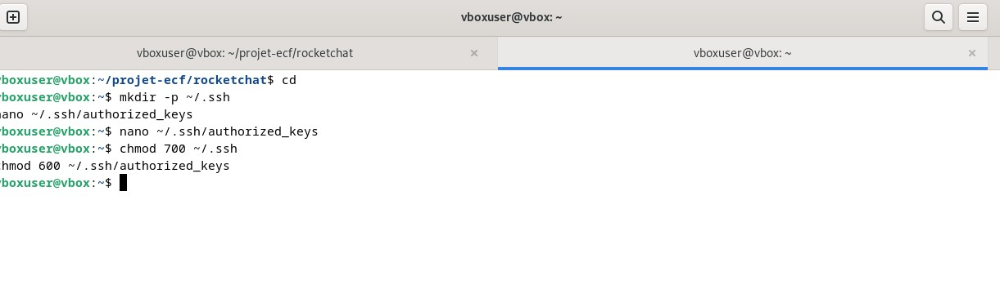
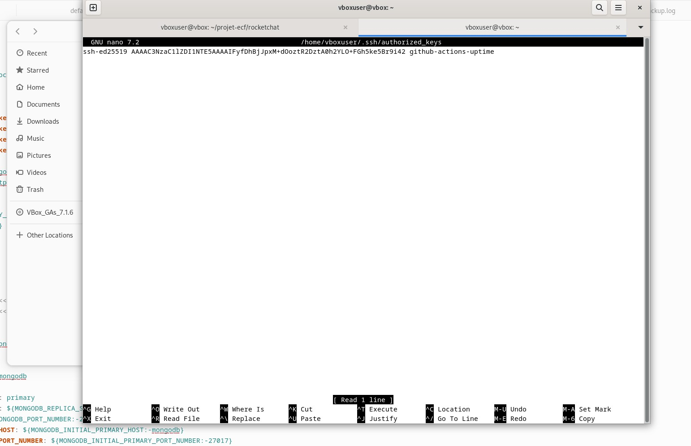
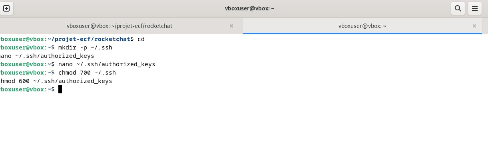
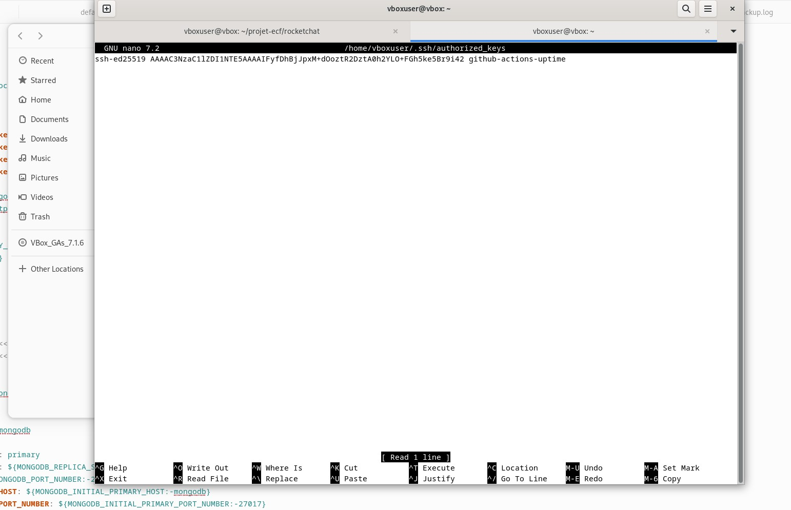

DevOps — Déploiement automatisé d’Uptime Kuma (CI/CD GitHub Actions)
..jpg)
 





Pipeline CI/CD local, simple et traçable
Objectif : industrialiser le déploiement d’Uptime Kuma sur une VM Debian locale. Un push Git déclenche automatiquement le déploiement via un runner GitHub Actions auto-hébergé, en s’appuyant sur Docker Compose pour la reproductibilité et la persistance des données.
- Critères : déploiement auto sur push, accès
http://IP:3010, données persistantes - Livrables :
docker-compose.yml,.github/workflows/deploy.yml, runner installé en service - Traçabilité : commits + logs GitHub Actions
Je veux garder l’exécution chez moi (pas d’SSH ouvert), obtenir des déploiements reproductibles avec Docker Compose, et tracer qui déploie quoi/quand (commits + logs Actions). Le tout doit rester simple, sécurisé, rapide à rejouer.
- Un
docker-compose.ymlversionné (port 3010, volume./data). - Un workflow
.github/workflows/deploy.ymlqui déploie sur chaque push demain. - Un runner self-hosted installé en service sur la VM Debian.
- L’appli accessible sur
http://<IP_VM>:3010, données persistantes entre redéploiements.
[Mon PC] --push--> [Repo GitHub: uptime-kuma-cicd]
|
v (GitHub Actions)
[Runner self-hosted sur VM Debian]
|
v
Docker + Docker Compose
|
[Container Uptime Kuma]
3010 (hôte) --> 3001 (conteneur)
./data --> /app/data (volume)# Sur la VM Debian
curl -fsSL https://get.docker.com | sh
sudo usermod -aG docker $USER # se reconnecter ensuite
docker compose version # Compose v2
# Sur mon poste
git installé + accès GitHub
Port 3010 libre sur la VMuptime-kuma-cicd/
├─ docker-compose.yml
└─ .github/
└─ workflows/
└─ deploy.ymldocker-compose.yml — persistance, port non conflictuel, redémarrage automatique :
version: "3"
services:
uptime-kuma:
image: louislam/uptime-kuma:latest
container_name: uptime-kuma
ports:
- "3010:3001" # 3010 hôte -> 3001 conteneur
volumes:
- ./data:/app/data # persistance des sondes & historique
restart: unless-stoppedgit init
git remote add origin https://github.com/<mon-user>/uptime-kuma-cicd.git
git add .
git commit -m "Initial commit - compose + workflow"
git branch -M main
git push -u origin mainmkdir -p ~/actions-runner && cd ~/actions-runner
curl -o actions-runner.tar.gz -L https://github.com/actions/runner/releases/download/v2.326.0/actions-runner-linux-x64-2.326.0.tar.gz
tar xzf actions-runner.tar.gz
# Lier le runner à TON dépôt
./config.sh --url https://github.com/<mon-user>/uptime-kuma-cicd --token <TOKEN>
# Lancer en service
sudo ./svc.sh install
sudo ./svc.sh start
sudo ./svc.sh status # doit être "active"Je note le label associé (par défaut self-hosted), que je cible dans le workflow.
# .github/workflows/deploy.yml
name: Deploy Uptime Kuma to VM
on:
push:
branches: [ "main" ]
workflow_dispatch: {} # déclenchement manuel possible
jobs:
deploy:
runs-on: self-hosted
steps:
- name: Checkout code
uses: actions/checkout@v4
- name: Ensure working dir exists
run: mkdir -p "$GITHUB_WORKSPACE/data"
- name: Deploy with Docker Compose
run: |
cd "$GITHUB_WORKSPACE"
docker compose pull
docker compose up -d --remove-orphansLe workflow rejoue proprement : il tire l’image et relance la stack (idempotent).
# Depuis mon poste
git add .
git commit -m "MAJ conf / nouveau monitor par défaut"
git push
# Sur la VM (contrôle)
docker ps
curl -I http://<IP_VM>:3010Je termine l’initialisation via l’UI (création de l’admin), puis j’ajoute quelques sondes.
- Monitors HTTP(s) vers Rocket.Chat / GLPI / Heimdall (toutes les 60 s).
- Monitor PING sur une passerelle / DNS interne.
- Notifications (mail/webhook) si besoin.
- Pas d’SSH exposé : le job tourne sur la VM via le runner.
- Utilisateur dans le groupe
docker(pas desudopartout). - Persistance :
./datasauvegardable/restaurable facilement. - Ports : choix du
3010pour éviter les collisions.
# Sauvegarde du volume
tar czf uptime-kuma-data_$(date +%F).tar.gz -C "$GITHUB_WORKSPACE" data
# Restauration
tar xzf uptime-kuma-data_YYYY-MM-DD.tar.gz -C "$GITHUB_WORKSPACE"
docker compose up -d
# Mise à jour forcée
docker compose pull && docker compose up -d
# Rollback par version
# 1) Pinner un tag (ex: louislam/uptime-kuma:1.23.x) dans compose.yml, commit/push
# 2) Ou restaurer l’archive de data si le souci est lié aux données- Port en conflit → mappage
3010:3001au lieu de3001:3001. - Runner inactif →
sudo ./svc.sh status/startet reconfig si besoin. - Volume absent → étape “Ensure working dir exists” dans le workflow.
- Pull impossible (réseau) → tester
ping registry-1.docker.io, proxy si nécessaire. - Non-redémarrage après reboot →
restart: unless-stoppedajouté.
- Minimalisme : un compose + un workflow → lisible, transmissible.
- Exécution locale : runner self-hosted → surface d’attaque réduite.
- Idempotence :
docker compose up -dsupporte les rejouages. - Traçabilité : chaque déploiement est lié à un commit.
- Tagging de versions (release) pour déployer un tag précis.
- Reverse proxy + HTTPS (Traefik/Nginx/Caddy) →
https://kuma.local. - Backups planifiés (cron + NAS/artefacts).
- Job planifié (
on: schedule) pour tirer l’image la nuit. - Exports/partage des dashboards de disponibilité.